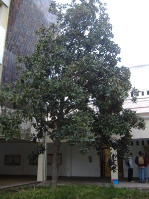
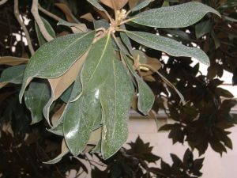

Flora
ornamental del
Campus de Reina Mercedes, Universidad de Sevilla
|
Magnolia
grandiflora
L., Syst. Nat.,
ed. 10, 1082 (1759)
|
Magnoliáceas |
|---|---|
|
Magnolio |
Árbol perennifolio |
|
Árbol
perennifolio,
de 6- Hojas alternas, pecioladas, simples; lámina 12-25 cm, elíptica u oblongo-ovada, entera, gruesa, de color verde intenso en el haz y pardo por el envés. Flores hermafroditas, solitarias, de 20-30 cm de diámetro; periantio formado por tres sépalos petaloideos y 6-12 pétalos blancos, algo carnosos; estambres purpúreos numerosos y dispuestos en espiral. Fruto de c. 10 cm, de tipo
polifolículo, es decir,
formado por un
conjunto de folículos
agrupados en una estructura leñosa parecida a una
piña;
semillas
c. 1- |
 Fotos: Sara Gálvez Manzano, 2005 |
|
 |
Observaciones: Es el género tipo de las plantas con flores o Magnoliofitas. El género Magnolia fue nombrado por Linneo en honor de Pierre Magnol, profesor de botánica en Montpellier (s. XVII-XVIII). Grandiflora alude a sus flores de gran tamaño. Apreciada en jardinería por su agradable follaje manteniéndose todo el año y por sus grandes y llamativas flores de aroma penetrante. |
| Área de origen:
SE
de Estados Unidos de Norteamérica |
|
|
Uso
en
el Campus: cinco ejemplares en el campus,
todos
como árbol ornamental (uno de ellos juvenil). |
Localización: |
| (1) G. López
Gonzalez (2001).Los árboles y arbustos de |
|
| José Ramón Fernández Pozuelo & Carlos Romero Zarco (2006) | |